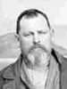

John and Ann Parsons Lovell Family Group
Home
Histories
Charts
Photos
Maps
Restricted
News
Info
Contact
John Lovell  (9 May 1812 - 13 Jan. 1881) (9 May 1812 - 13 Jan. 1881)- pictured at the right Ann Parsons (4 Jan. 1809 - 4 Dec. 1851) Married 15 Feb. 1835 Married Elizabeth Smith Married Ane Pederson Anderson  |    
|
 |
George Lovell 22 Nov. 1835 - 1 July 1899 Married Martha Turner 28 Jan 1862The 1st child of John Lovell and Ann Parsons |
| * | Sylvia Lovell - 2nd child, 9 Mar. 1837 - 21 Mar. 1838 |
| * | Edmund Lovell - 3rd child, 22 Feb. 1841 - 3 Sep. 1843 |
| * | John Lovell - 4th child, 3 Feb. 1843 - 25 Feb. 1843 |
  |
Joseph Hyrum Lovell 3 Aug. 1844 - 18 Jun. 1892 Married Leah Ellen Radford 30 Aug. 1869The 5th child of John Lovell and Ann Parsons |
| * | William Lovell - 6th child, 13 Feb. 1847 - 27 Feb. 1847 |
 |
Martha Ann Lovell 24 Mar. 1849 - 24 Mar. 1919 Married Anders Peter Anderson 14 Apr. 1873 The 7th child of John Lovell and Ann Parsons |